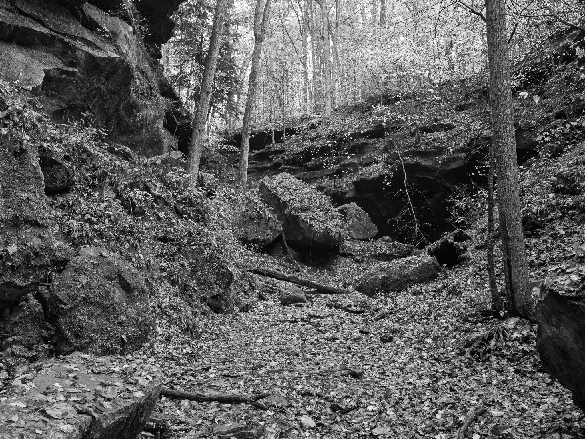
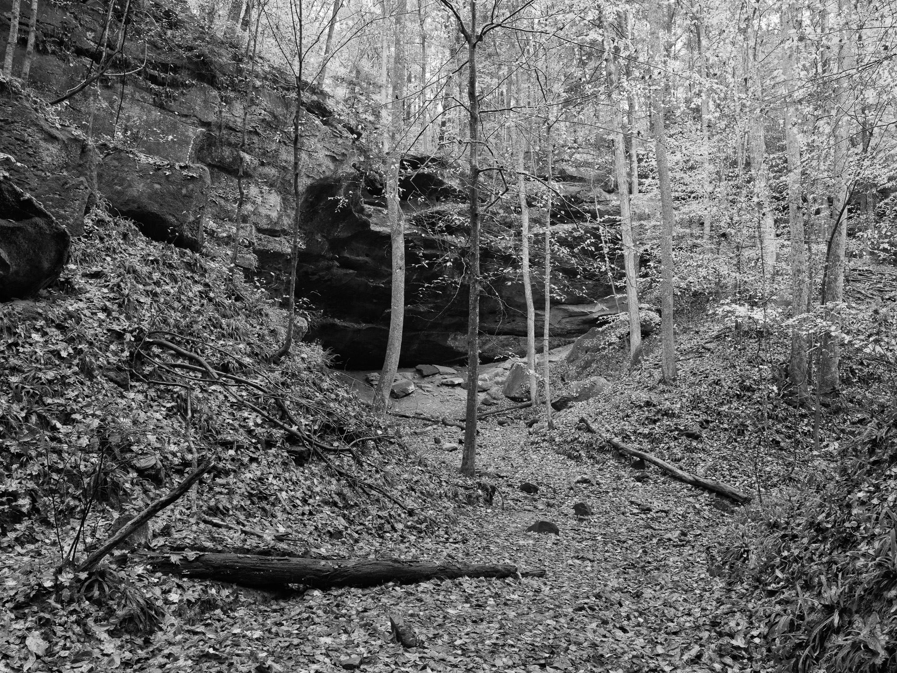
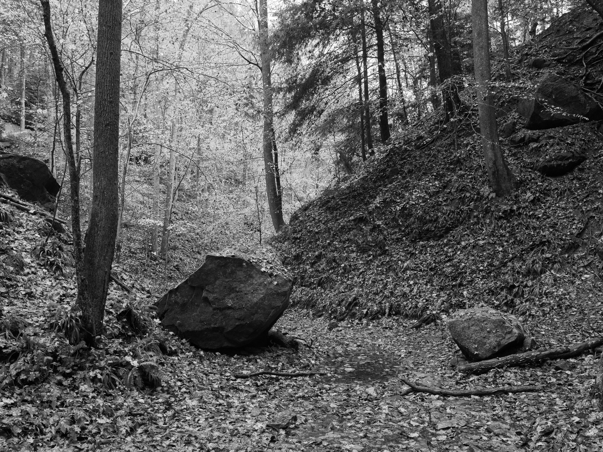
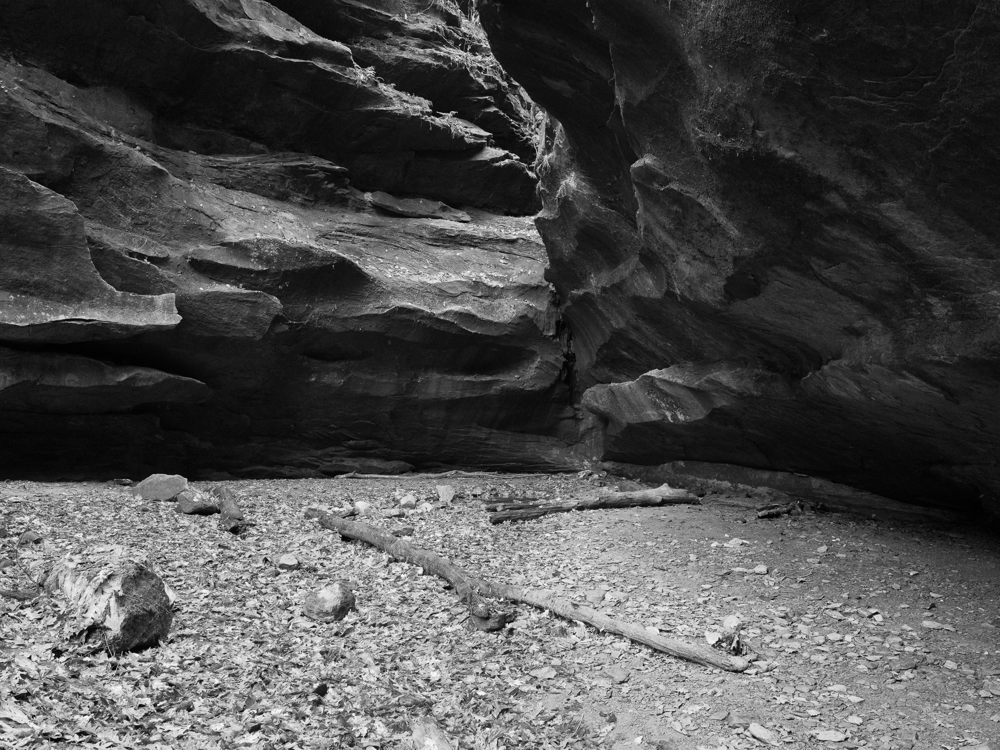
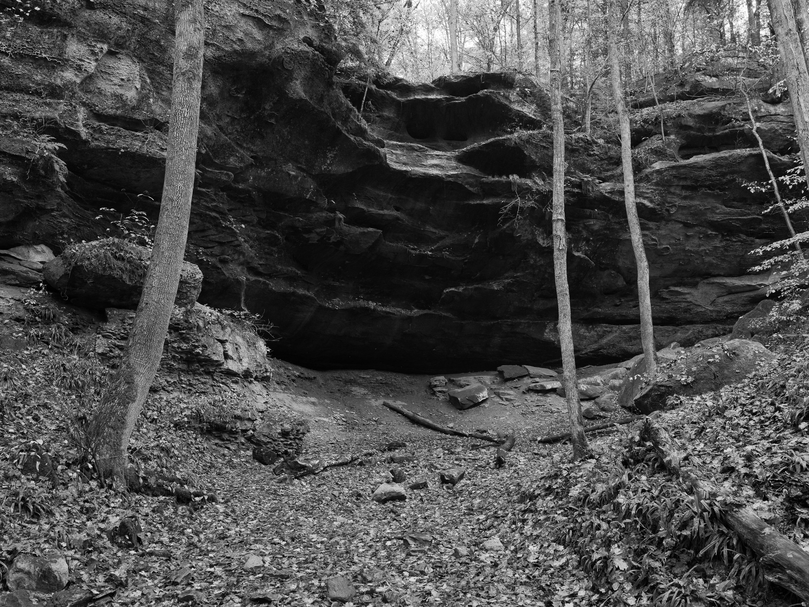

Public Lands Institute
Map
Images
Archive
About
Contribute
Hemlock Cliffs
IN

Hemlock Cliffs 1 · 2026-11-02
_DSF4801.jpg

Hemlock Cliffs 2 · 2026-11-02
_DSF4803.jpg

Hemlock Cliffs 3 · 2026-11-02
_DSF4804.jpg

Hemlock Cliffs 4 · 2026-11-02
_DSF4807.jpg

Hemlock Cliffs 5 · 2026-11-02
_DSF4813.jpg
View all 5 images →
← Charlestown State Park
Wesley Chapel Gulf →